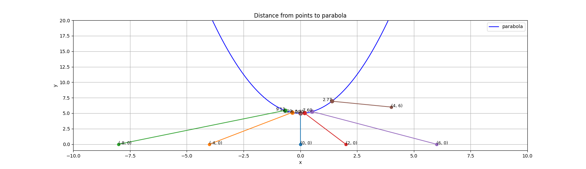
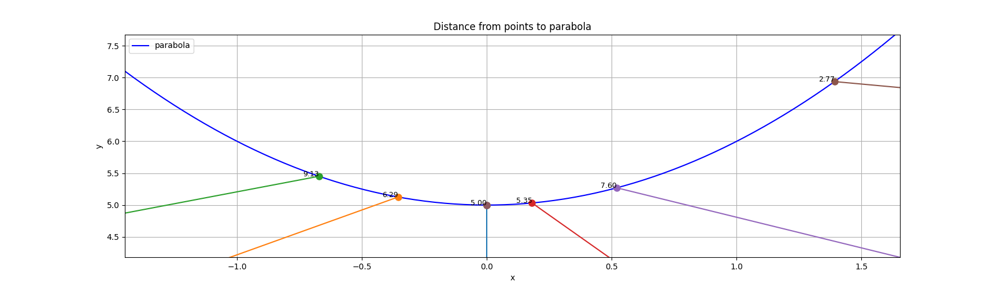
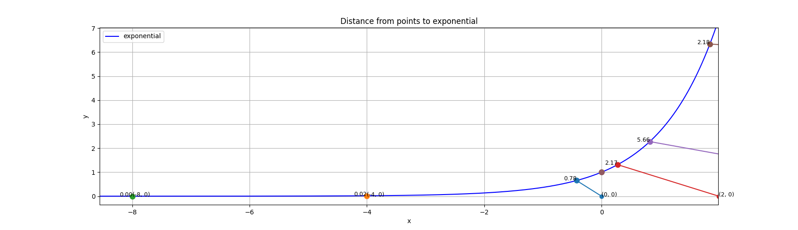
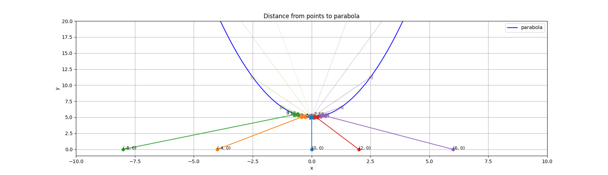
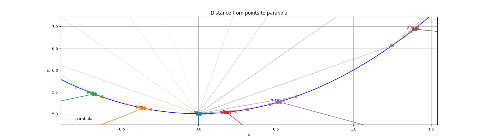
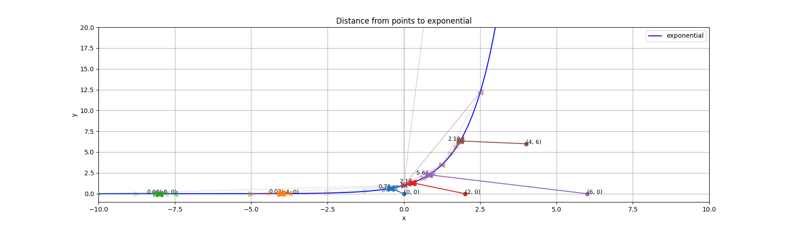
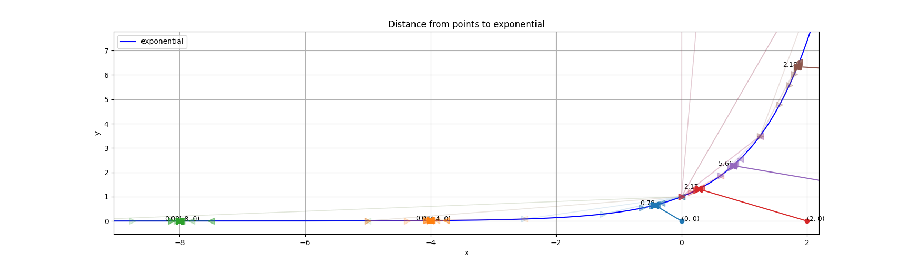
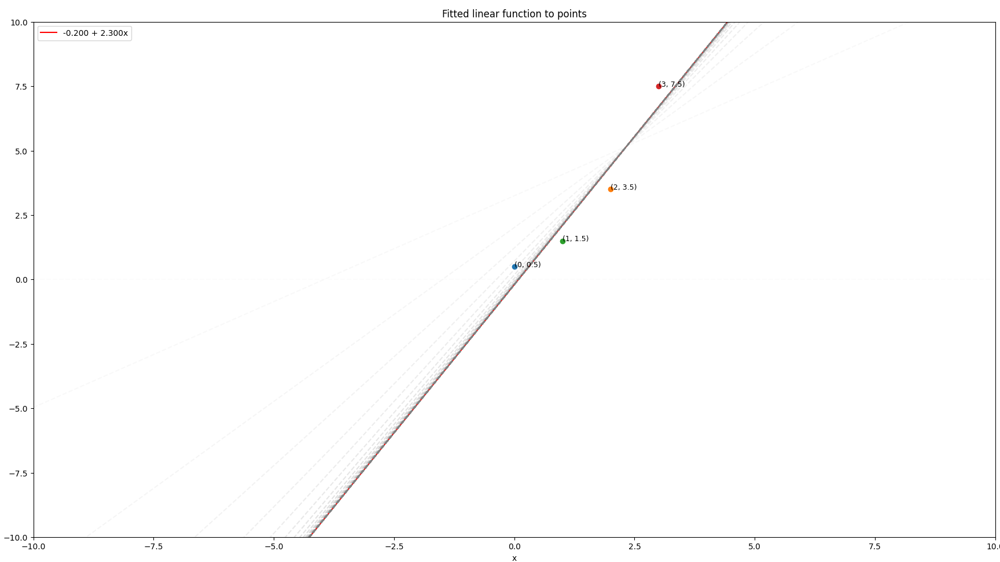
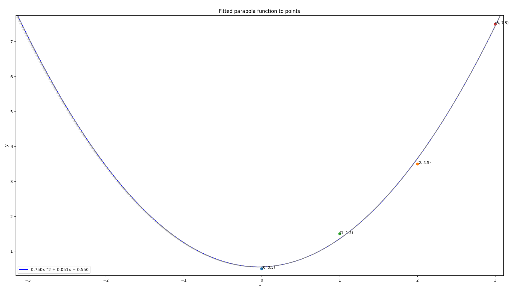

Part 1: Finding the shortest distance from a point to a function
Analytical Method
Attempting the analytical method (finding the derivative of the distance function, setting to 0, and solving for the critical points) resulted in fairly straightforward calculations. Calculator use was required to compute the final distance values. The main reason this was so simple to do by hand is because the distance function itself is so simple to derive.
Full handwritten calculations below.
Numerical Methods
Each of the numerical methods was employed for two iterations rather than engaging with the full convergence process or setting a tolerance value.
Newton-Raphson Method
To use the Newton-Raphson method, I took the derivative and double derivative of the distance function. Then, for every given point, I plugged in the (x_i, y_i) values and applied an initial guess of x = 0. Applying the Newton-Raphson formula gave me a new guess for my second iteration, which yielded my final distance estimates for each point. It can be observed that all of the resulting distances are close to the analytical solutions.
Bisection Method
For the bisection method, I selected an initial interval of x_1 = -1 to x_2 = 1. After calculating the function values at the endpoints to ensure there was a sign change (meaning that it would cross the x-axis), I determined the midpoint x_3 and plugged it into the function. Depending on the sign of this new function value, I selected another interval spanning either x_2 to x_3, or x_1 to x_3. The same process was applied (verify the interval crosses the x-axis, calculate the midpoint, plug the midpoint into the function). I stopped at this second iteration for every given point. I tested against the same functions I did for Newton-Raphson. The accuracy of this method seemed to be worse than Newton-Raphson, particularly in the last two points, which are off by several tenths.
There is a small typo for the distance calculation for point (6,0). The second distance highlighted (8.355) is the intended answer. The first highlighted distance can be disregarded.
The Code
Newton-Raphson Method in Python
Implementing Newton-Raphson method in Python was overall straightforward. Since there are no ways to derive functions in Python analytically, I had to define the first and second derivatives manually. The plots below show the five given points, and the previous iterations' guesses are indicated by the reduced alpha valued dots along the parabolic and exponential curves. I chose a tolerance of 1e-7 and a max number of 100 iterations. The functions I chose were the original function in the assignment, x^2 + 5, and exp(x) to test the robustness of the method.


Zoomed version of the previous plot.

Zoomed version of the previous plot.
However, there was a stumbling block upon testing a new point, (4,6). I noticed that this method actually fails to minimize the distance for both the parabolic and exponential functions. This is because the Newton-Raphson method fails to converge when the second derivative evaluates to close to zero or negative. This makes sense. If the second derivative is close to zero, it can cause huge jumps in the iteration process since the denominator in the update formula will have become very small. When the second derivative is negative, the distance function quadratic model opens downwards. That means the method will actually converge to an inflection point that is the maximum, not minimum. When applied in the Newton-Raphson method, it can be observed that the resulting x will have its sign flipped if the first derivative is negative. This will result in steps moving in the wrong direction.
To solve this, I implemented a check to handle when the second derivative was close to zero or negative (tolerance of 1e-12) in the Newton-Raphson function to prevent the divergence case. When the second derivative is negative, I apply a 0.1-scaled gradient step (x = x - 0.1 * df(x)), without any division by the second derivative. This not only decreases the magnitude in which the x guess changes, but prevents any sign flip caused by a negative second derivative in division.
With this new fix applied, the method now converges for (4,6) and the other points' minimized distances remain accurate. Notice that the distance for the the most negative values, like (8,0), appear as 0.0. These aren't actually 0 - the full distance value is actually ~0.00035. The remaining digits are cut off by the display format's precision. Also notice that - while history of past iterations' guesses is implemented in the code - it's not as easy to view the previous iterations' guesses on the plots, even when zoomed. This is due to the overlapping points appearing so closely to each other that they appear to occupy the same pixel. However, notice that the (0,5) point on the curve is coloured strangely. Those are the overlapping initial guesses for all the points.
Distance from point (0, 0) to parabola: 5.00
Root found at x = 0.0000, y = 5.0000
Distance from point (-4, 0) to parabola: 6.29
Root found at x = -0.3555, y = 5.1264
Distance from point (-8, 0) to parabola: 9.13
Root found at x = -0.6721, y = 5.4517
Distance from point (2, 0) to parabola: 5.35
Root found at x = 0.1807, y = 5.0327
Distance from point (6, 0) to parabola: 7.60
Root found at x = 0.5199, y = 5.2703
Distance from point (4, 6) to parabola: 2.77
Root found at x = 1.3918, y = 6.9370
Distance from point (0, 0) to exponential: 0.78
Root found at x = -0.4263, y = 0.6529
Distance from point (-4, 0) to exponential: 0.02
Root found at x = -4.0003, y = 0.0183
Distance from point (-8, 0) to exponential: 0.00
Root found at x = -8.0000, y = 0.0003
Distance from point (2, 0) to exponential: 2.17
Root found at x = 0.2731, y = 1.3141
Distance from point (6, 0) to exponential: 5.66
Root found at x = 0.8222, y = 2.2755
Distance from point (4, 6) to exponential: 2.18
Root found at x = 1.8468, y = 6.3396
import numpy as np
import matplotlib.pyplot as plt
def newton_raphson(f, df, d2f, tolerance=1e-7, iterations=100):
x = 0
hist = [x]
for i in range(iterations):
if d2f(x) < 1e-12:
x = x - 0.1 * df(x)
else:
x = x - df(x) / d2f(x)
if abs(x - hist[-1]) < tolerance:
break
hist.append(x)
return x, hist
def set_up_functions(x0, y0, func_type):
if func_type == 'parabola':
y = lambda x: x**2 + 5
f = lambda x: (x-x0)**2 + ((x**2 + 5) - y0)**2
df = lambda x: 2*(x-x0) + 2*((x**2 + 5) - y0)*(2*x)
d2f = lambda x: 2 + 2*(2*x)**2 + 2*((x**2 + 5) - y0)*(2)
elif func_type == 'exponential':
y = lambda x: np.exp(x)
f = lambda x: (x-x0)**2 + (np.exp(x) - y0)**2
df = lambda x: 2*(x-x0) + 2*(np.exp(x) - y0)*np.exp(x)
d2f = lambda x: 2 + 2*(np.exp(x))**2 + 2*(np.exp(x) - y0)*np.exp(x)
root, history = newton_raphson(f, df, d2f)
return y, root, history
def plot_distances(points_list, func_type):
x_pts = np.linspace(-10, 10, 1000)
y_curve, root, history = set_up_functions(0, 0, func_type)
y_curve = y_curve(x_pts)
plt.figure(figsize=(20, 5))
plt.plot(x_pts, y_curve, 'b-', label=func_type)
for i, (x_0, y_0) in enumerate(points_list):
colour = plt.cm.tab10(i)
y, root, history = set_up_functions(x_0, y_0, func_type)
distance = np.sqrt((root - x_0)**2 + (y(root) - y_0)**2)
print(f"Distance from point ({x_0}, {y_0}) to {func_type}: {distance:.2f}")
print(f"Root found at x = {root:.4f}, y = {y(root):.4f}")
plt.plot([x_0, root], [y_0, y(root)], '-', color=colour)
plt.plot(x_0, y_0, 'o', color=colour)
for k, x_guess in enumerate(history):
# fading alpha based on when the guess was made during the iterations
plt.plot(x_guess, y(x_guess), 'o', color=colour, alpha=(k + 1) / len(history), markersize=8)
plt.text(x_0, y_0, f'({x_0}, {y_0})', fontsize=9, ha='left')
plt.text(root, y(root), f'{distance:.2f}', fontsize=9, ha='right', clip_on=True)
plt.xlim(-10, 10)
plt.ylim(-1, 20)
plt.title(f'Distance from points to {func_type}')
plt.xlabel('x')
plt.ylabel('y')
plt.legend()
plt.grid()
plt.show()
def main():
### EXAMPLE 1: Distance from point to a parabolic function.
points = [(0,0), (-4,0), (-8,0), (2,0), (6,0), (4,6)]
function = 'parabola'
plot_distances(points, function)
### EXAMPLE 2: Distance from point to an exponential function.
function = 'exponential'
plot_distances(points, function)
if __name__ == "__main__":
main()Bisection Method in Python
Implementing the bisection method in Python proved to be even more straightforward than Newton-Raphson. Similarly to Newton-Raphson, I had to manually enter the derivative of the distance function. However, there was no longer any need to derive the second derivative. Also similarly to Newton-Raphson, I calculated the distance from the given points to a parabolic function and an exponential function. The bisection method proved robust with both functions. The only change that was made from the analytical version was altering my starting interval to ensure that the interval crossed the x-axis for both functions. I simply multiplied the original interval of (-1,1) by a factor of 10.

Zoomed version of the above.


Zoomed version of the above.

Similarly to Newton-Raphson, I also provided an additional point, (4,6), to verify the method's robustness. Unlike Newton-Raphson, this point worked out of the box without any significant additional modifications required. Since the bisection method is purely reliant on narrowing down on the area in which the function crosses the x-axis, there aren't too many odd cases to catch - unless the function itself never crosses the x-axis. However, for the derivative of the distance function, it does so. It is possible that choosing an initial interval that did not cross the x-axis would have posed a problem. However, (-10,10) seemed to work for both functions. Notice that the graphs all contain chords of various alphas. This is to represent the previous intervals that the algorithm attempted before meeting the accepted tolerance, such that the lowest-alpha chords are the earliest guesses and therefore span the most distance.
Distance from point (0, 0) to parabola: 5.00
Root found at x = 0.0000, y = 5.0000
Distance from point (-4, 0) to parabola: 6.29
Root found at x = -0.3555, y = 5.1264
Distance from point (-8, 0) to parabola: 9.13
Root found at x = -0.6721, y = 5.4517
Distance from point (2, 0) to parabola: 5.35
Root found at x = 0.1807, y = 5.0327
Distance from point (6, 0) to parabola: 7.60
Root found at x = 0.5199, y = 5.2703
Distance from point (4, 6) to parabola: 2.77
Root found at x = 1.3918, y = 6.9370
Distance from point (0, 0) to exponential: 0.78
Root found at x = -0.4263, y = 0.6529
Distance from point (-4, 0) to exponential: 0.02
Root found at x = -4.0003, y = 0.0183
Distance from point (-8, 0) to exponential: 0.00
Root found at x = -8.0000, y = 0.0003
Distance from point (2, 0) to exponential: 2.17
Root found at x = 0.2731, y = 1.3141
Distance from point (6, 0) to exponential: 5.66
Root found at x = 0.8222, y = 2.2755
Distance from point (4, 6) to exponential: 2.18
Root found at x = 1.8468, y = 6.3396
import numpy as np
import matplotlib.pyplot as plt
def bisection(df, func_type, tolerance=1e-7, iterations=100):
x_1, x_2 = (-10,10)
hist = [(x_1, x_2)]
for i in range(iterations):
x_3 = (x_1 + x_2) / 2
f_3 = df(x_3)
if f_3 > 0:
x_2 = x_3
else:
x_1 = x_3
hist.append((x_1, x_2))
if abs(x_2 - x_1) < tolerance:
return x_3, hist
return (x_1 + x_2) / 2, hist
def set_up_functions(x0, y0, func_type):
if func_type == 'parabola':
y = lambda x: x**2 + 5
df = lambda x: 2*(x-x0) + 2*((x**2 + 5) - y0)*(2*x)
elif func_type == 'exponential':
y = lambda x: np.exp(x)
df = lambda x: 2*(x-x0) + 2*(np.exp(x) - y0)*np.exp(x)
root, history = bisection(df, func_type)
return y, root, history
def plot_distances(points_list, func_type):
x_pts = np.linspace(-10, 10, 1000)
y_curve, root, history = set_up_functions(0, 0, func_type)
y_curve = y_curve(x_pts)
plt.figure(figsize=(20, 5))
plt.plot(x_pts, y_curve, 'b-', label=func_type)
for i, (x_0, y_0) in enumerate(points_list):
colour = plt.cm.tab10(i)
y, root, history = set_up_functions(x_0, y_0, func_type)
distance = np.sqrt((root - x_0)**2 + (y(root) - y_0)**2)
print(f"Distance from point ({x_0}, {y_0}) to {func_type}: {distance:.2f}")
print(f"Root found at x = {root:.4f}, y = {y(root):.4f}")
plt.plot([x_0, root], [y_0, y(root)], '-', color=colour)
plt.plot(x_0, y_0, 'o', color=colour)
for k, (left, right) in enumerate(history):
alpha = (k + 1) / len(history) # older intervals have less alpha
plt.plot([left, right], [y(left), y(right)], '-', color=colour,
alpha=alpha, linewidth=1 + 2 * alpha, zorder=2 + k)
plt.plot(left, y(left), '>', color=colour, alpha=alpha, markersize=8, zorder=2 + k)
plt.plot(right, y(right), '<', color=colour, alpha=alpha, markersize=8, zorder=2 + k)
plt.text(x_0, y_0, f'({x_0}, {y_0})', fontsize=9, ha='left')
plt.text(root, y(root), f'{distance:.2f}', fontsize=9, ha='right', clip_on=True)
plt.xlim(-10, 10)
plt.ylim(-1, 20)
plt.title(f'Distance from points to {func_type}')
plt.xlabel('x')
plt.ylabel('y')
plt.legend()
plt.grid()
plt.show()
def main():
### EXAMPLE 1: Distance from point to a parabolic function.
points = [(0,0), (-4,0), (-8,0), (2,0), (6,0), (4,6)]
function = 'parabola'
plot_distances(points, function)
### EXAMPLE 2: Distance from point to an exponential function.
function = 'exponential'
plot_distances(points, function)
if __name__ == "__main__":
main()Part 2: Fitting points to an equation
Analytical Method
This part has two objectives: fitting a line to the provided points (0,0.5), (2,3.5), (1,1.5), (3,7.5), and fitting a parabola to the same points.
Fitting to a line
As the assignment specifies, I minimized the squared error. I established a ρ (which is simply the sum of every permutation of (y*(x) - y(x))^2, where y*(x) is the linear equation with (x_i, y_i) substituted in). With this ρ, I was able to take its partial derivatives with respect to both parameters of interest (intercept and slope, represented as C_0 and C_1 respectively). This created a system of equations that I could solve and create my line of best fit equation.
Fitting to a parabola
The strategy for a parabola proved slightly different. Rather than setting up another MSE equation, I set up a system of 4 equations. For each of the points given, I substituted their x and y values into the parabolic equation, y = Bx^2 + Cx + D. This left a system of 4 equations with 3 unknowns. After converting to matrix form (where A contained the coefficients for each x term, x contained the B, C, and D coefficients, and b contained the y values), I was able to calculate A^T * A and A^T * b to give me the coefficients and constants for the corresponding augmented matrix. Solving this matrix (using a calculator as the calculations were complex and time-consuming to do by hand), I was able to solve for B, C, and D to create an analytically-derived parabolic equation.
Numerical Methods
Newton-Raphson Method
For this method, I applied a "coordinate descent" approach, which essentially boiled down to optimizing one parameter at a time and holding the other(s) constant. The first and second derivatives were easy to derive by hand. While it's also possible to approach it from a multivariate perspective (calculating the gradient and the Hessian and formulating a step formula), I went with this method as it was very similar to what I had previously implemented for minimizing the distance from points to a function. In a way, this problem is also minimizing distance - except instead of being given a function to minimize the distance to, I needed to come up with a function that would minimize the distance for all of the given points. This worked for both the linear and parabolic cases without issue during my hand calculations. However, notice the significant discrepancy between the analytical and hand-calculated numerical solutions. It's likely due to the low number of iterations.
The Code
In Python, the Newton-Raphson one-parameter step approach turned out somewhat effective. I observed that for the parabola case, I actually maxed out on iterations before converging. (The linear case only hit about 39 iterations, and my convergence tolerance was 1e-7.) I set a max of 100 iterations. While the answer is reasonably close to the analytically-derived solution, it's not great. Potentially the "true" multivariate solution would have converged more effectively. I also implemented the guard for small or negative second derivatives to prevent the divergence case I had previously observed. However, removing this guard didn't affect my results in any way, so it seems like it didn't meet this case during the iterations. This method could be useful if it is particularly complex to derive the Hessian.


While slightly difficult to observe due to the proximity of the iterations, the plot includes (in reduced alpha) past iterations' parameters, plotted in their respective forms. This is more evident in the linear example than the parabolic. (Due to the high number of iterations and extreme closeness in the iterations, I took a subsample of 5 of the 100 iterations in the graph.)
import numpy as np
import matplotlib.pyplot as plt
def newton_raphson(params, pts_list, func_type, tolerance=1e-7, iterations=100):
hist = [tuple(params)]
for i in range(iterations):
old_params = params
for j in range(len(params)):
# recompute the derivatives at the latest params so each update sees the newest values of the others
# where first, second correspond to the first and second derivatives of the MSE
first, second = set_up_derivatives(pts_list, params, func_type)
new_params = list(params)
# guarding against particularly small or negative second derivatives (Newton-Raphson divergence cases)
if second[j] < 1e-12:
new_params[j] = params[j] - 0.1 * first[j]
else:
new_params[j] = params[j] - first[j] / second[j]
params = tuple(new_params)
hist.append(params)
if max(abs(a - b) for a, b in zip(params, old_params)) < tolerance:
break
plot_fitted_func(pts_list, params, func_type, hist)
return params, hist
def set_up_derivatives(pts_list, params, func_type):
if func_type == 'parabola':
B, C, D = params
df_dB = df_dC = df_dD = 0.0
df_d2B = df_d2C = df_d2D = 0.0
for x, y in pts_list:
f = B*x**2 + C*x + D - y
df_dB += 2 * f * x**2
df_d2B += 2 * x**2 * x**2
df_dC += 2 * f * x
df_d2C += 2 * x * x
df_dD += 2 * f
df_d2D += 2
return [df_dB, df_dC, df_dD], [df_d2B, df_d2C, df_d2D]
if func_type == 'linear':
C_0, C_1 = params
df_dC_0 = df_dC_1 = 0.0
df_d2C_0 = df_d2C_1 = 0.0
for x, y in pts_list:
f = C_0 + C_1 * x - y
df_dC_0 += 2 * f
df_d2C_0 += 2
df_dC_1 += 2 * f * x
df_d2C_1 += 2 * x * x
return [df_dC_0, df_dC_1], [df_d2C_0, df_d2C_1]
def plot_fitted_func(points_list, params, func_type, history):
x_pts = np.linspace(-10, 10, 1000)
if func_type == 'parabola':
B, C, D = params
y_curve = B*x_pts**2 + C*x_pts + D
plt.plot(x_pts, y_curve, 'b-', label='{B:.3f}x^2 + {C:.3f}x + {D:.3f}'.format(B=B, C=C, D=D))
elif func_type == 'linear':
C_0, C_1 = params
y_curve = C_0 + C_1 * x_pts
plt.plot(x_pts, y_curve, 'r-', label='{C_0:.3f} + {C_1:.3f}x'.format(C_0=C_0, C_1=C_1))
for i, (x_0, y_0) in enumerate(points_list):
colour = plt.cm.tab10(i)
plt.plot(x_0, y_0, 'o', color=colour)
plt.text(x_0, y_0, f'({x_0}, {y_0})', fontsize=9, ha='left')
if func_type == 'parabola':
for k, param_guess in list(enumerate(history))[::20]:
B_guess, C_guess, D_guess = param_guess
y_guess = B_guess*x_pts**2 + C_guess*x_pts + D_guess
plt.plot(x_pts, y_guess, '--', color='gray', alpha=(k + 1) / len(history))
elif func_type == 'linear':
for k, param_guess in enumerate(history):
C_0_guess, C_1_guess = param_guess
y_guess = C_0_guess + C_1_guess * x_pts
plt.plot(x_pts, y_guess, '--', color='gray', alpha=(k + 1) / len(history))
plt.xlim(-10, 10)
plt.ylim(-10, 10)
plt.title(f'Fitted {func_type} function to points')
plt.xlabel('x')
plt.ylabel('y')
plt.legend()
plt.show()
def main():
### EXAMPLE 1: Fit a parabola to the points.
points = [(0, 0.5), (2, 3.5), (1, 1.5), (3, 7.5)]
function = 'parabola'
params, hist = newton_raphson((0, 0, 0), points, function, tolerance=1e-7, iterations=100)
print(function, params, f"({len(hist) - 1} sweeps)")
### EXAMPLE 2: Fit a line to the points.
function = 'linear'
params, hist = newton_raphson((0, 0), points, function, tolerance=1e-7, iterations=100)
print(function, params, f"({len(hist) - 1} sweeps)")
if __name__ == "__main__":
main()
Download Source Code
Click any of the files below to download the corresponding Python script: